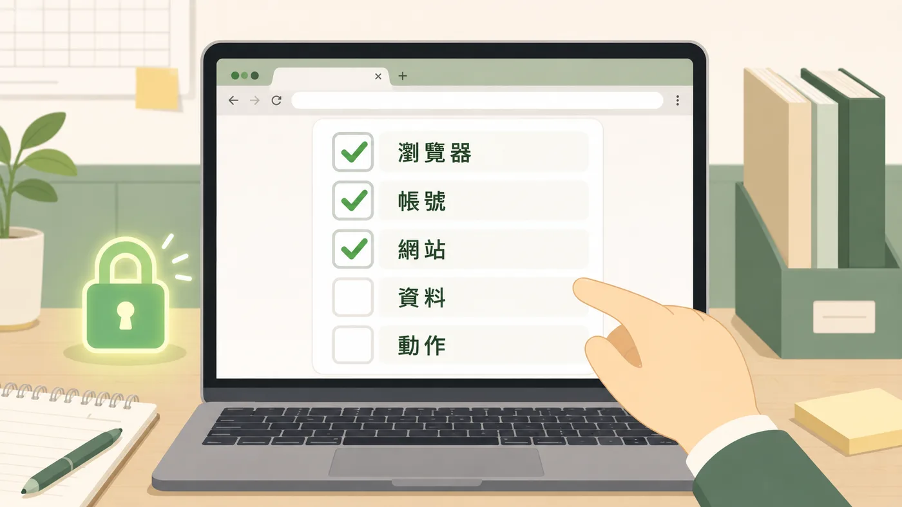

1
確認瀏覽器
AI 要使用指定的工作瀏覽器或測試環境，不要混用你平常處理私人帳號或重要工作的瀏覽器。
 頂溪國小
頂溪國小第 4 單元
這一頁只做一件事：讓 AI 開網頁、看畫面、點按或截圖之前，先把瀏覽器、帳號、網站、資料和動作確認清楚。
很多行政工作本來就卡在瀏覽器裡：登入系統、填報網站、Google 工具、雲端文件。
讓 AI 開網頁、看畫面、點按之前，先把五件事確認清楚，AI 才能幫忙做對的事。

不用學技術設定，照下面的順序確認就可以。
AI 要使用指定的工作瀏覽器或測試環境，不要混用你平常處理私人帳號或重要工作的瀏覽器。
先看清楚目前登入的是哪個帳號。不同處室、測試帳號、個人帳號與正式帳號不要混在一起。
AI 要操作哪個網站、哪個頁面、哪個分頁，都要說清楚。不要讓 AI 在一堆開著的分頁裡自己亂找。
截圖、網頁內容、上傳資料、登入畫面、學生或家長資料，都可能含敏感資訊。不要貼到公開地方，也不要交給不明外部服務。
先分清楚哪些只是查詢、整理、草稿或預覽，哪些會送出、刪除、寄信、公告、匯入或修改正式資料。
看不懂技術詞沒有關係。請 AI 把問題翻成你能確認的事項，再決定要不要繼續。
請它改用白話說明：「這會影響哪個帳號？會看到哪些資料？會做哪些動作？」不要急著照抄指令。
密碼和驗證碼不要交給 AI。需要登入時，自己先完成登入，再讓 AI 接手後面的步驟。
網頁內容也可能誤導 AI。先不要讓它點選、送出或下載，請它說明現在在哪個網站、為什麼會到這裡、下一步想做什麼。